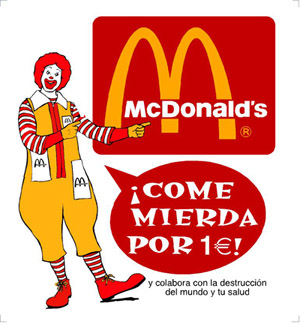

Big mac
 De: La Frikipedia, la enciclopedia extremadamente seria.
De: La Frikipedia, la enciclopedia extremadamente seria.
De la serie botánica para todos:
| Nombre común:
|
Big mac
|
| Nombre científico:
|
Mierda
|
| Especie:
|
Comida
|
| Subespecie:
|
Basura
|
| Clima:
|
Cálido
|
| Zonas en las que se da:
|
Mc donalds
|
| ¿Es comestible?:
|
Eso dicen
|
| ¿Es fumable?:
|
No
|
| Morfología (para el que sepa que es esto):
|
Ninguna
|
| Finalidad de su existencia:
|
Demasiados
|
 Anuncio publicitario de la Big Mac. Big mac
Dícese del producto, elaborado con carne de wombat, materia oscura y grasa de lemur con epilepsia.
Su poder es tremendamente grande, equivalente a una patada giratoria de Chuck norris. Si usted a consumido accidentalmente o a propósito (idiota!) Big mac, consulte la tabla que tiene a continuación.
| Un mordisco
|
Uno entero (olé tus huevos)
|
Más de cinco (OMG!)
|
| Síntomas: Vómitos y ligeras alucinaciones, a uno le parece estar viendo un montón de wombats peleando entre ellos.
|
Síntomas: Alucinaciones severas, a uno le parecerá ver a los cuatro jinetes del Apocalipsis
|
Síntomas: És casi incurable, en menos que canta un gallo aparece Carmen de Mairena y te viola hasta dejarte el culo como la bandera de Japón.
|
| Remedio: Usted deberá arrastrarse hasta el hospital más próximo para que le practiquen un lavado de estómago.
|
Remedio: Deberá realizar con ayuda de un chamán ewok, 15 vírgenes recién folladas y un mapache con el Sindrome de Gollum, un ritual de resurrección de Dodo.
|
Remedio: Recitar el Chucknuestro.
|
Elaboración
- Pillamos a un Wombat de los cojones y lo despellejamos vivo con un sable laser.
- Esa misma carne, la fileteamos, la picamos, la metemos dentro de la Nevera con pirólisis y lo dejamos esperar un par de horitas.
- Ahora viene la parte difícil: Nos vamos al corazón de madagascar y con la ayuda de un negro capturamos a un Lemur con epilepsia (son fáciles de reconocer)
- Le chupamos la grasa con la boca, aunque es mas facil dejar que lo haga el temible Chupacabras.
- Pillamos un poco de materia oscura de la nevera y mezclamos todos los ingredientes en una máquina-de-mezclar-ingredientes (Horno).
Sabías qué...
- ...si intentas quemar uno se convierte en el wombat que había sido anteriormente?
- ...en China lo llaman "comida americana familia feliz"?
- ...tienes un wombat detrás tuyo?
- ...es más mortal que una Amanita phalloides?
- ...si cagas un Big Mac ya tienes cena?
- ...es la comida favorita de los gorilas en celo?
Autor(es):
- Roms
- Lljosemll
- Paround
- Fenix77
- Helloombark
- Butters2
- Sir Lancebot
Frikipedia 2005-2016, Licencia
GFDL 1.2 - Extraído por FrikiLeaks